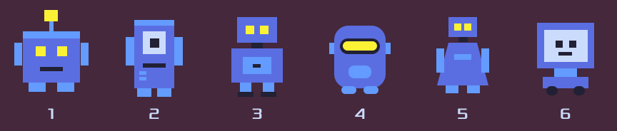
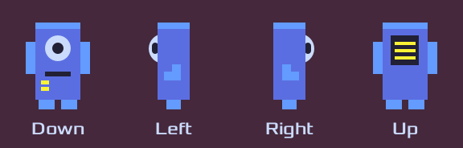

robotsThe six robot candidates
robot2_directionsThe chosen cyclops, four facings
The yellow code tag is the snapshot name (report bugs by it); click to copy. Tags link to their cross-feature pages.
robotsThe six robot candidates
robot2_directionsThe chosen cyclops, four facings
robot2_walkThe walk cycle, all facings in step